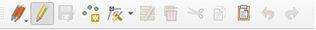
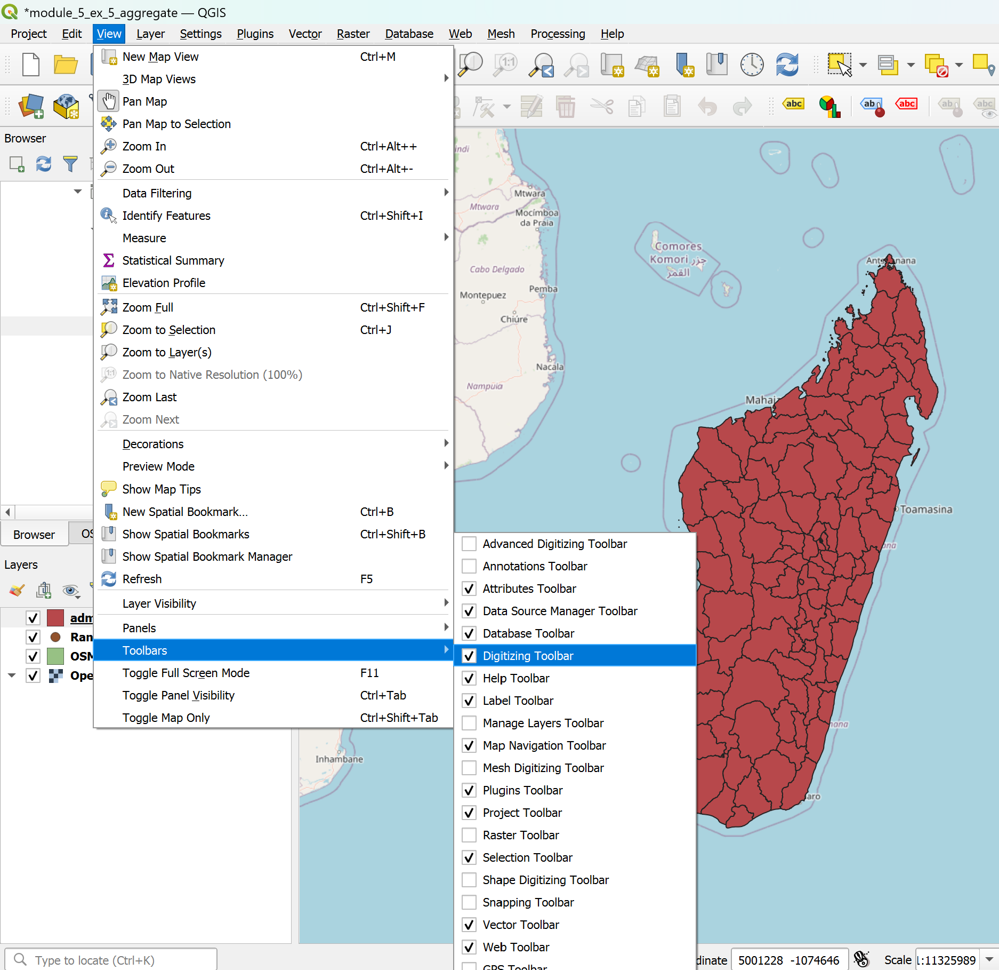
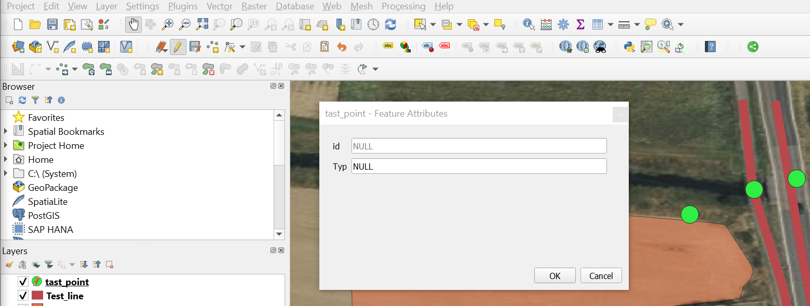
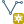
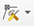
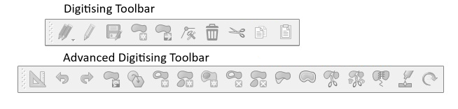

Digitalización#
La digitalización es el proceso de conversión de datos geográficos de mapas o imágenes en forma digital comúnmente representados como datos vectoriales. Durante este procedimiento, se rastrea la información espacial de mapas o imágenes, formando puntos, polilíneas o polígonos. Para digitalizar los datos de un nuevo conjunto de datos siempre hay que empezar por crear el conjunto de datos antes de llenarlo con datos digitalizados.
La barra de herramientas de digitalización en QGIS#

La digitalización en QGIS se realiza principalmente con la barra de herramientas. Para activar la barra de herramientas, vaya a
View->Toolbars->Digitisation Toolbar.
{kind=link}

Crear una nueva capa#
En la barra superior, vaya a
Layer->Create Layer->New GeoPackage LayeroNew Shapefile Layer.Se abrirá una nueva ventana. Aquí puede especificar las propiedades de la capa.
En
Database, haga clic en el de tres puntos y vaya a la carpeta donde desea guardar el nuevo conjunto de datos.
de tres puntos y vaya a la carpeta donde desea guardar el nuevo conjunto de datos.archivo shapefile específico: Establezca la codificación del archivo en
UTF-8.Geometry type: Seleccione el tipo de geometría que desea digitalizar: puntos, líneas o polígonos.
Seleccione el CRS (sistema de referencia de coordenadas) que desea utilizar para la nueva capa. De manera predeterminada, se establece en el proyecto SRC. Si desea cambiar el SRC haga clic en .
En
New Field, puede agregar columnas a la nueva capa. Aquí puede definir qué tipo de información/datos estarán disponibles en la tabla de atributos para cada entidad.Name: Asigne a la nueva columna un nombre que represente la información que desea almacenar en ella.Type: Aquí puede seleccionar el tipo de datos para la nueva columna. Por ejemplo,Textagregará una nueva columna con datos de cadena (texto). Para datos numéricos puede elegirWhole numberoDecimal number.Maximum Lengthdefine el número máximo de caracteres que puede tener el campo. Esto es relevante para la longitud del texto o la precisión de los números decimales. Por ejemplo, es posible que desee establecer una longitud máxima alta para los campos de texto si desea nombres de calles largas como “Martin Luther King Jr. Boulevard” (34 caracteres).
Haga clic en para añadir la nueva columna al
Fields List.
Una vez que haya terminado de agregar los campos, haga clic en
OK.
Agregar geometrías a una capa#
Creación de datos de punto#
Seleccione la capa de puntos a la que desea agregar datos en el panel Layer
Vaya a la barra de herramientas de digitalización y haga clic en
 . Ahora la capa está en el modo de edición.
. Ahora la capa está en el modo de edición.Haga clic en
 .
.Haga clic con el botón izquierdo en la entidad que desea digitalizar.
Una vez que haga clic, aparecerá una ventana llamada
[Your Layer Name]- Feature Attribute. Aquí puede agregar la información sobre esta entidad a las diferentes columnas, basándose en la tabla de atributos de la capa.
{kind=link}

Una vez que haya terminado con las
 de digitalización para guardar sus ediciones.
de digitalización para guardar sus ediciones.Haga clic de nuevo en
para finalizar el modo de edición.
Creación de datos de línea#
El método es similar a la digitalización de un punto (ver arriba). Primero tienes que crear una nueva capa de línea o usar una existente.
Attention
Si crea una nueva capa de línea recuerde cambiar el tipo de geometría en líneas porque ahora estamos creando datos de líneas.
En el panel capas, seleccione la capa de línea a la que desea agregar datos.
En la barra de herramientas de digitalización, haga clic en
. Ahora la capa está en modo de edición.Haga clic en

.Cree la línea en el lienzo del mapa haciendo clic izquierdo para agregar vértices. Cuando haya terminado, haga clic derecho en el último punto para terminar de editar la geometría.
Aparecerá una nueva ventana titulada
[Your Layer Name]- Feature Attribute. Aquí puede completar la información de la columna de la entidad.Una vez que haya terminado con la digitalización, haga clic en
para guardar sus ediciones.Haga clic en el icono
de nuevo para finalizar el modo de edición.
Creación de datos de polígono#
En el panel capas, seleccione la capa de polígono a la que desea agregar datos.
Haga clic en
para iniciar el modo de edición.Haga clic en
Capture Polygon para agregar polígonos.
para agregar polígonos.Dibuje un polígono en el lienzo del mapa con el botón izquierdo. Haga clic derecho para finalizar la creación del polígono y unir el primer y el último punto que ha agregado.
Se abrirá una nueva ventana. Aquí puede agregar la información de la columna para esta entidad.
Guarde las ediciones haciendo clic en el icono de
y saliendo del modo de edición haciendo clic en el icono de .
Modificación de las geometrías existentes#
En el panel capas, seleccione la capa con la geometría que desea editar haciendo clic en ella. Aparecerá en azul.
En la barra de herramientas de digitalización, haga clic en
para iniciar edit mode.En la barra de herramientas de digitalización, haga clic en

. Ahora, puede mover y editar vértices de geometrías.Una vez que haya terminado, no olvide salir del modo de edición haciendo clic en
y guarde sus ediciones.
Agregar anillo a la capa de polígonos existente#
En QGIS, la adición de anillos a polígonos se realiza con la “barra de herramientas de digitalización avanzada”. Para activar la barra de herramientas, vaya a View -> Toolbars -> Advanced Digitisation Toolbar.

Haga clic en
para iniciar el modo de edición de una capa de polígono.Haga clic en (por ejemplo, mapear el patio interior de un edificio, o - como se muestra en el video - crear un círculo para marcar una isla en el lago).
Recursos adicionales#
El siguiente video de YouTube muestra todo el proceso de digitalización de polígonos en QGIS con más detalle. Recuerde que el YouTuber está usando una versión anterior de QGIS, por lo que las cosas podrían ser diferentes en su versión.